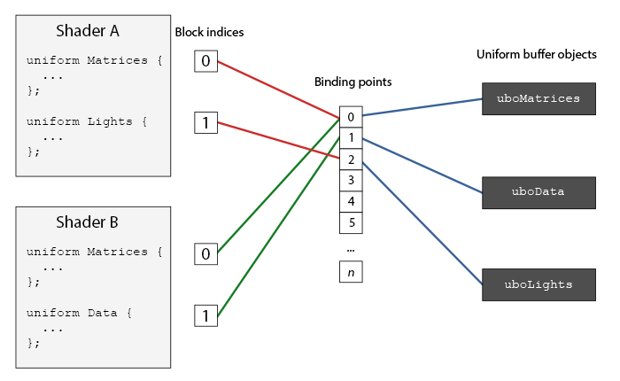
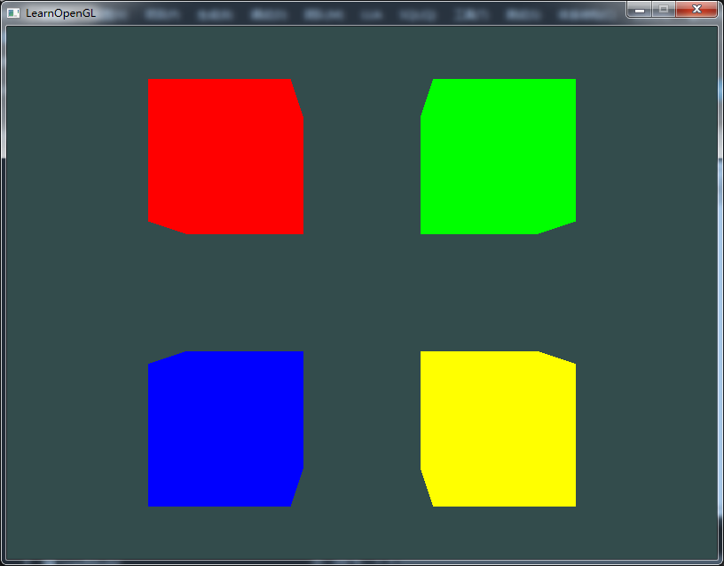

高级GLSL(3)
撰写于 2016-10-12 修改于 2016-10-21 分类 OpenGL
如果有这种情况，有多个着色器，每个着色器中都要设置若干个相同的uniform变量（比如view，projection），那就要每个uniform变量都要设置一遍，尽管他们的值都是相同的，那有没有像VAO 和 VBO这样的缓冲区，可以节省一下操作？当然有，那就是UBO(Uniform Buffer Object)，uniform缓冲区对象，可以存储一系列uniform变量，对应各个着色器中uniform block中的uniform变量。
uniform block
uniform block就是uniform变量组成的类结构体的块。结构大体如下：
layout (std140)意思是：当前定义的uniform块为它的内容使用特定的内存布局，这个声明实际上是设置uniform块布局(uniform block layout)。std140就是其中的一种内存对齐方式，类似于C++的结构体的内存布局。基本类型，int、float、bool内存大小为4个字节；向量为2*4或者4*4个字节(即vec3为4*4个字节)；标量或者向量数组，每个元素与vec4(即4*4个字节)相同；矩阵，可以看成是存贮着大量向量的数组，每个元素的大小与vec4(即4*4个字节)相同；结构体，根据以上规则计算各个元素的大小，并且间距必须是vec4基线的倍数。而且每个变量的偏移量必须是，变量所占内存的整数倍。教程中例子很明了：
std140只是一种uniform block的内存布局方式，还有其他两种方式packed, shared。简单的介绍一下。
详细的说明看这里。
使用uniform block
那么问题来了，uniform block怎么获取UBO中的数据呢，先看一张图：

这就是uniform block和UBO通信的方式，他们中间需要一个绑定点来交流数据。首先要获取着色器中uniform block的索引，把这个索引绑定到一个绑定点上。然后，把UBO也要帮当到一个绑定点上，uniform block就能通过绑定点找到当前绑定在绑定点上的UBO，进而获取UBO上的数据。
创建UBO
个人理解：创建UBO或者VBO时，OpenGL会生成一个缓冲区指针，但这只是一个很普通的指针，并且没有分配内存空间。然后绑定到一个目标上（GL_UNIFORM_BUFFER或者GL_ARRAY_BUFFER），这时，对该目标做任何操作，都相当于操作绑定到该目标上的缓冲区。当然如果操作完毕后，一定要把解绑当前该目标上绑定的缓冲区，防止误操作。
UBO(Uniform Buffer Object)的创建跟VBO的创建是一样的，创建UBO，绑定到GL_UNIFORM_BUFFER目标上，然后分配内存空间。
UBO已经完全准备好了，然后就是填充UBO中的数据。为什么分配的 2*sizeof(mat4) 的空间呢？因为目前顶点目前着色器中的uniform block的结构如下所示，有两个mat4变量：
填充view和projection:
绑定UBO
UBO已经创建完毕，数据也已经填充进去，下面就是要把UBO绑定到绑定点上，这就用到了glBindBufferBase 和 glBindBufferRange，两个函数的功能基本相同，glBindBufferBase是把当前缓冲区绑定到绑定点上，glBindBufferRange是把一定当前缓冲区一定范围内的数据绑定到绑定点上，下面是官方文档：
文档的说明看了好长时间才理解，此处重新解读一下（纯属个人理解，暂时认为是对的），函数传入target，有什么用吗？在这之前一直以为target是为了使用target绑定的UBO，但是UBO（即buffer）已经传入了，看了官网文档一段很拗口的话（原文：binds the buffer object buffer to the binding point at index index of the array of targets specified by target） ，琢磨了一会儿，终于明白了什么意思（暂时是这么理解的，不知道对不对），目标target对应着一个数组，这个数组每个元素的索引就是绑定点（这个数组的元素应该存储的就是指向UBO的指针）。
此处定义的UBO全部内容都用来存储uniform block中的内容，因为此处可以使用glBindBufferBase或者glBindBufferRange两种方式：
或者
到目前为止UBO部分已经全部结束，下面是处理uniform block
绑定uniform block
UBO中数据已经有了，那怎么让uniform block对应到UBO呢，UBO已经绑定到绑定点上了，那uniform block也要绑定到对应的绑定点上才可以跟UBO对应起来，这就用到了glUniformBlockBinding，下面是官方文档：
怎么获取uniform block索引？GLuint glGetUniformBlockIndex(GLuint program, const GLchar *uniformBlockName)，用法很简单，从program中获取名为uniformBlockName的uniform block的索引值。
以上就是uniform block 和 UBO的用法。在渲染的时候，就不用重复设置这些变量，一次搞定，终身受用。渲染示例：
渲染
|
|
运行效果图：

学完这部分后，对VAO也是有点感触，简单的解释一下VAO（个人理解）:
VAO：怎么理解VAO呢，全称是顶点数组对象(Vertex Array Object)，绑定后，任何随后的设置顶点属性都会存贮在VAO中（glEnableVertexAttribArray、glDisableVertexAttribArray、glVertexAttribPointer），其实VAO中存储的一系列绑定的VBO的起始位置，跨度，数据长度等属性信息，当渲染时，OpenGL会用vertex shader中layout的值，找到当前绑定的VAO中对应layout的属性信息，然后进一步找到VBO中顶点信息。
参考教程：https://learnopengl-cn.github.io/
学习交流：我的OpenGL工程
再说一次，像均值和高斯这种计算方法，意味着对临近点或者临近点权重的计算。这个平均像素值可能会也可能不会等于临近点。但是，中值像素一点存在于临近点中，相对于均值，使用中值来替换中间的像素，可以明显减少噪点（椒盐噪点）